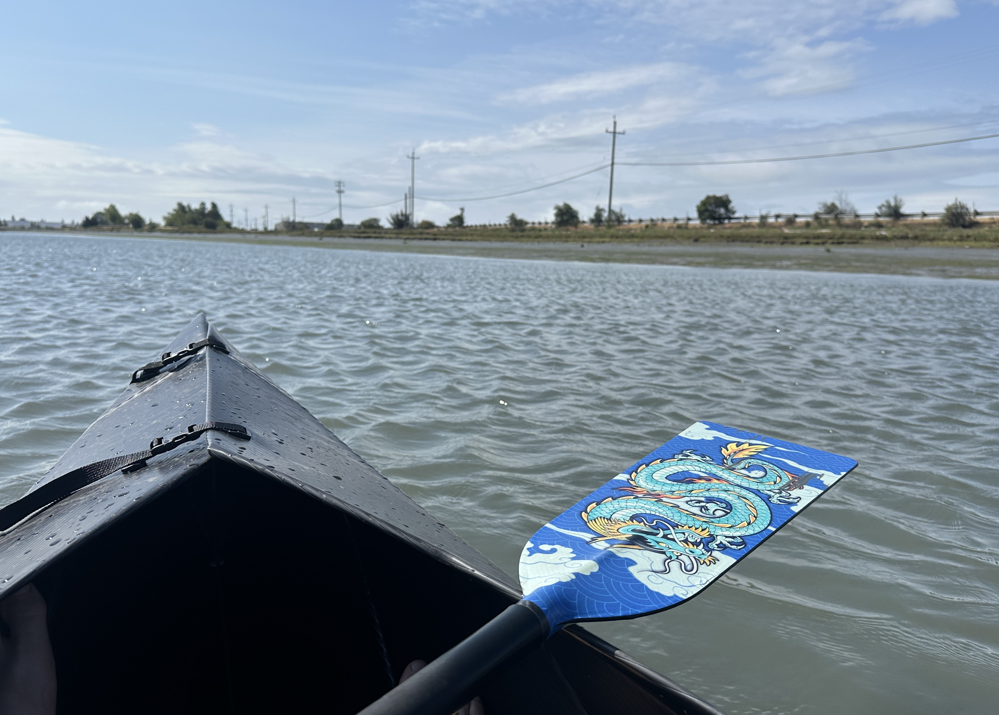

I’ve spent the past four weeks off from work, primarily to sort out some complex feelings about the industry that I’ve made my career in. The tech industry, and the “AI” industry in particular, have earned widespread distrust for aiding the destruction of our economies, politics, and cultures.
When I was a kid, one of my father’s favorite aphorisms was:
When you don’t know what to do, do the laundry.
It was much more than a trite excuse to get us to do chores — I know of three kinds of benefits of following this advice. One is that there is a cognitive coordination of working through a difficult problem while pulling pieces of clothing out of the pile, and hanging them on a line or folding and stacking them neatly. The physical manipulations warm up the mental circuits to pull pieces out of a knotty problem, turn them over and reshape them, and organize a new mental model. Another benefit is along the lines of
fill the unforgiving minute with sixty seconds’ worth of distance run.
Reclaiming fractional time from pointless anxiety by doing something that will be beneficial regardless of your bigger goals. And finally, there is a therapeutic self care benefit, of clearing away the physical mess, of setting aside minor things that pull at your attention, so that you can build up the reserve of attention, time, and clean clothing to tackle crucial problems. I did a normal amount of laundry last month, but I spent many hours cleaning up garages, finished several paperwork chores, visited out-of-town family, exercised almost every day, and got quite a few great naps.

I did not get as far into my reading list as I had hoped. We are fortunate to have an abundance of thoughtful tech criticism coming out, and the gist of it can be cribbed from podcasts, but I think these issues deserve more time and attention than we have in our usual daily lives. I hope to do appropriate book reviews as I finish them this summer, but in case I don’t make it that far, I will try to summarize my current understanding:
These new technologies are “normal technology”, and so the limiting factor for practical use will be managing control and building trust around the wide variety of failure modes in any particular application context.
- Building trust will require more reliability and transparency, through a more thorough science of system testing and evaluation.
But key harms of the AI industry come from its concentrated power and political ideology.
- These harms can only be addressed by requiring more distributed power and accountability, through open standards and adversarial interoperability, building solidarity across stakeholder communities, and policies that support open societies and reinforce human rights in the data supply chain and in the deployed context.
I think it’s past time for us to clean house, to take a hard look at how the technologies that we are building are wielded by the powerful, and to work new strategies to create a healthy world for everyone.